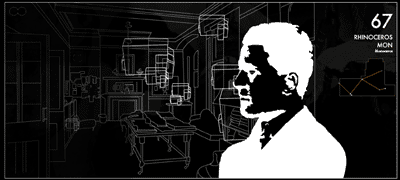
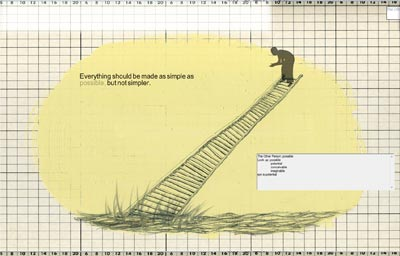

|
| |
NOVEMBERThursday, November 13 | |
| 
David Clark, 88 Constellations for Wittgenstein, web art | David Clark is a media artist who lives and works in Halifax, Canada. He is known for his website A is for Apple that has been shown at over 50 film festivals around the world including Sundance, SIGGRAPH, Transmediale in Berlin and the American Museum of the Moving Image. A is for Apple won Best in Show at the 2003 SXSW Interactive Festival in Austen, Texas and First Prize at FILE2002 in Sao Paulo, Brazil. He has also made a feature film, numerous shorter videos and installation works. He studied at the School of the Art Institute of Chicago, the Whitney Program in New York, and the Canadian Film Centre in Toronto. He currently teaches film and media arts at NSCAD University in Halifax. 88 Constellations for Wittgenstein (to be played with the Left Hand) is an interactive, non-linear net.art piece that explores the life and philosophy of Ludwig Wittgenstein through a series of animated vignettes. Each of the 88 sections corresponds to one of the 88 constellations in the night sky. This work considers the questions that Ludwig Wittgenstein pondered in his eventful lifetime - logic, language, the nature of thinking, the limits of knowledge - all in relation to our contemporary digital world with it's symmetries, asymmetries, and doubles. |
| 
Michelle Gay, Poemitron, custom software |
In Michelle Gay's work, drawing and photography are blended into low-tech animations combined with sophisticated software engines and interfaces which complicate these digital and real spaces. She employs drawing in her digital works to play the precision of the algorithm against the hand-drawn and inexact ink and graphite on paper. Concepts such as gender and its relation to technologies, the blending of synthetic and real experiences, and the possibilities of deriving meaning from non-linear narratives are grist in the mill of her studio practice. The Poemitron artware functions something like a dialogue with the computer. Employing a custom built natural language processor engine (including its mistakes), it creates texts that begin with a selected passage and morph into something entirely different. Also on view, Error Code. Michelle Gay studied art and art history at the University of Toronto and then received her MFA from NSCAD in Halifax. She integrates a range of media, investigating the junctures between bodies and technologies. She builds computers to make and operate her interactive artworks. She collaborates with Colin Gay (a particle physicist). Interested in the possibilities of touch and poetics within new media projects, they develop artworks designed to play with technologies in non-useful ways. She is represented in Toronto by the Birch Libralato Gallery. |